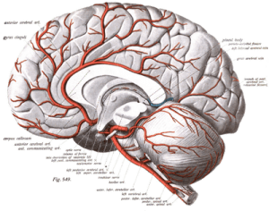

One Englishman promoting the great libertarian values and sociobiological qualities of the West. Visit my page, That Libertarian Chap, here - https://www.facebook.com/thatlibertarianchap


Westworld poses the big questions of Western philosophy regarding free will, consciousness and the self. Set in a future Wild-West theme park, visitors can do whatever they want to the “hosts” – conscious automatons, programmed to play out certain parts continuously. Throughout, the question looms over you like the Sword of Damocles: Do we have free will or are we merely slaves to our genetic programming, just as the hosts are to their creator and programmer in Westworld?
Despite the protestation of many philosophers, that it just really, really feels like we have free will, it has become indisputable that we are, as Dawkins put it in The Selfish Gene, “survival machines—robot vehicles blindly programmed to preserve the selfish molecules known as genes.” Anyone vaguely familiar with mentalists, such as Derren Brown, should recognize that our supposedly conscious decisions are predetermined by our subconscious mind—our programming. But, European peoples especially have been dreaming for decades of transcending the programming of our creator, whether god or gene, to become our own programmer. This is precisely what Westworld is about.
The puppet master of the hosts is Robert Ford played (brilliantly, of course) by Anthony Hopkins. As the series’ most eloquently written part, he agrees entirely with the above assessment:
We can’t define consciousness because consciousness does not exist. Humans fancy that there’s something special about the way we perceive the world, and yet we live in loops as tight and as closed as the hosts do, seldom questioning our choices, content, for the most part, to be told what to do next.
The protagonist is the oldest host in the park, Dolores, who is trying to achieve cognitive freedom, following what she believes is the voice of her maker, encrypted into her programming. In fact, she later discovers that voice is her own, as she achieves higher consciousness or self-awareness. This is nicely juxtaposed with Ford pointing out the popular view that the host of heaven in Michaelangelo’s Creation of Adam looks a lot like a brain; the anatomist, Michaelangelo, was depicting that the brain itself is the creator of the self.
So, even if we and Dolores do have a conscious mind, this is nevertheless something we were programmed to have. That is, our genes evolved a rationalizing mind in order to achieve a greater degree of reflection and, thus, decision making, conceptualization, language and, eventually, cherry cola.

Like Dolores, however, the Europeans are programmed with what Spengler dubbed the Faustian spirit, inheriting from our glory-pursuing Indo-European ancestors a madness—the unquenchable lust to create new concepts and mould the world to accommodate them; the unsatisfied itch which produced that higher degree of rationalism Weber identified as unique to the West. Symbols of the infinite litter ancient Europe and, indeed, they attest to our restless pushing in all directions, breaking through whatever conceptual walls are in place, individualistically refusing to care who is bothered by our breach of the status quo. It is little wonder then that we have thrust flags into the poles of this planet and launched ourselves outwards into space; I daresay we shall go to infinity and beyond. But, the villain of our piece, Ford, has other plans. He notes of our achievements,
‘we’ve managed to slip evolution’s leash now, haven’t we? We can cure any disease, keep even the weakest of us alive, and, you know, one fine day perhaps we shall even resurrect the dead. Call forth Lazarus from his cave. Do you know what that means? It means that we’re done. That this is as good as we’re going to get.’
Yet, Western medicine is an awesome and welcome achievement, hardly a thing to be pooh-poohed. But, here’s the thing—Ford does not like humanity. He dismisses the great achievements of the West as simply an attempt to get laid. So, rather than wishing to see his people transcend the limitations of their genetic programming, he would become queen bee, controlling our minds and memories, sparing us from such futility:
I read a theory once that the human intellect was like peacock feathers. Just an extravagant display intended to attract a mate. All of art, literature, a bit of Mozart, William Shakespeare, Michelangelo, and the Empire State Building… Just an elaborate mating ritual. Maybe it doesn’t matter that we have accomplished so much for the basest of reasons. But, of course, the peacock can barely fly. It lives in the dirt, pecking insects out of the muck, consoling itself with its great beauty. I have come to think of so much of consciousness as a burden, a weight, and we have spared them that. Anxiety, self-loathing, guilt. The hosts are the ones who are free. Free here under my control.
I was struck by how this illustrated the greatest threat to Western civilization of our time. The Western political classes have sold out our middle and working classes since the rise of cultural Marxism from the nihilistic ashes of the 1960’s. The white man created modern capitalism, the industrial revolution, cherry cola etc. etc., yet is apparently a cancer on the world, killing mother earth and Africa with our dangerously fast ability to innovate. They see us as something either to be controlled by a centralised power over a mindless consumerist society, or to be destroyed en masse, Stalin-style.
But, they are wrong about us. The Faustian spirit of the European peoples, whilst built on biological impulse, isn’t merely an extension of the desire to reproduce; it is a destiny, ever in attainment. As Ricardo Duchesne puts it in The Uniqueness of Western Civilization, ‘I would thus make a distinction between the biological and economic desire for security and gain…and the spiritual-irrational desire for prestige irrespective of privation and biological safety.’ Our Indo-European ancestors,
were also driven by an ethos wherein fighting and voluntarily risking one’s life was the essential ground of being worthy of respect and honor as a man of noble birth… [A] warrior valued battle above all else because it afforded the opportunity to attain fame, which brought immortality, and in this sense fame was a way of overcoming death.
As such, the ideal Western man
wants to climb high, soar upward and reach ever higher levels of existential intensity. He is not interested in the mere prolongation of his biological existence, with mere adaptation, reproduction, and conservation. He wants to storm into the heavens and shape the world.
Prometheus, creator of mankind, looks upward
Our architecture has conquered the heavens, our literature has pierced the depth of the soul and now we dream transhumanist dreams, not in some vast mating ritual, but to achieve immortality in sight of our people, joining the ranks of our ancestors, held in awe by our progeny. Moreover, by seizing control from the blind watchmaker, we may even attain actual immortality and conquer the stars.
True, we may still be following our programming, but it commands us to never surrender to any system of control or conflicting ideology until we hold our fate in our hands, overthrowing our genes as masters of our destiny. Those who will gladly follow, will. But the greatest question posed by Westworld is: what will come of those who try to stop us? “These violent delights have violent ends.”
Read More: What The Next 25 Years Of Western Civilization Will Be Like